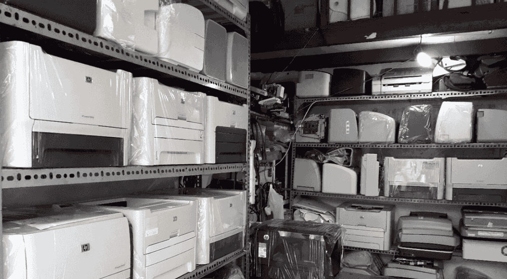

Nạp mực máy in tại nhà quận 12 HCM
Dịch vụ nạp mực máy in tại nhà HCM Quận 12
TRUNG TÂM MỰC IN TRƯỜNG PHÁT
Sửa máy tính tại nhà – Cài đặt laptop – Nạp mực máy in
Tiếp Nhận Dịch Vụ : 0908 327123
Nạp mực máy in tại nhà TPHCM – Sửa máy tính tận nơi TPHCM
Trường Phát cam kết : Nhanh Nhất – Rẻ Nhất – Chất Lượng Nhất
Dịch vụ tin học Trường Phát HCM gởi đến quý khách lời chào trân trọng nhất. Cảm ơn quý khách đã sử dụng dịch vụ đổ mực máy in tại nhà quận 12 của công ty chúng tôi trong thời gian qua. Với độ ngũ kỹ thuật viên tay nghề cao, nhiều năm kinh nghiệm, chúng tôi luôn đặt tiêu chí: ” Khách hàng là thượng đế” lên hàng đầu
Dịch vụ chất lượng, giá cả phải chăng khi nạp mực máy in Q12
Bạn đang gặp trục trặc với việc nạp mực máy in và đang cần gấp một dịch vụ tốt, nhanh chóng mà giá cả lại phải chăng ở quận Tân Bình mà còn băn khoăn chưa biết lựa chọn nơi nào ? Bạn muốn mực nạp vào máy phải có chất lượng tốt, quy trình đảm bảo, nhanh chóng ? Hãy đến ngay với trung tâm mực in INNO để tìm kiếm sự hài lòng, an tâm khi nạp mực máy in q12
Những ưu điểm tuyệt vời khi nạp mực máy in quận 12 tại Trường Phát
bạn sẽ được hưởng những quyền lợi lớn đến từ chất lượng dịch vụ cực tốt của chúng tôi. Trường Phát cam kết khách hàng 100% hài lòng bởi chúng tôi có những ưu điểm sau:
– Đội ngũ của trung tâm là những kĩ sư, kĩ thuật viên chuyên nghiệp, có kinh nghiệm nhiều năm, luôn hân hạnh được phục vụ quý khách hàng mọi lúc bằng tất cả sự nhiệt tình.
– Phục vụ tận nhà cực tiện lợi, nhanh chóng. Chúng tôi có các chi nhánh trải dài trên địa bàn thành phố HCM. Bạn ở Q12 muốn sử dụng dịch vụ nạp mực chỉ cần liên lạc, Trường Phát sẽ có mặt chỉ sau 30 phút và phục vụ cả ngày thứ 7- chủ nhật.
– Quy trình nạp mực đảm bảo kĩ thuật, mực chất lượng tốt không hư linh kiện.
– Nạp mực luôn đi cùng với chế độ bảo hành đến khi hết mực nếu bị lỗi sau khi nạp.
Trường Phát cam kết đem đến sự hài lòng cho quý khách

Bên cạnh dịch vụ nạp mực, chúng tôi còn có một số dịch vụ thu mua máy cũ, máy bể vở giá cao, đổ mực máy in phun màu,bơm mực thay chip máy in laser màu, sửa máy in, máy tính, mạng,….. Tất cả đều có thể làm tại nhà.
Làm sao để liên lạc với chúng tôi ?
Hotline của Trường Phát: 0908 327 123
Website: http://napmucnhanh24h.com/
Chúng tôi luôn sẵn sàng phục vụ bạn một cách tận tình, chu đáo nhất. Hãy liên lạc với chúng tôi ngay qua hotline hoặc website để được hưởng dịch vụ nạp mực máy in tốt nhất.
Công ty chúng tôi chuyên: nạp mực máy in tận nơi quận 12, bơm mực máy in tại nhà, sửa máy tính, máy in tại các Quận như: Quận 1, Quận 3, Quận 5, Quận 6, Quận 10, Quận 11, Quận Tân Bình, Quận Tân Phú, Quận Gò Vấp, Quận Bình Tân, Quận Phú Nhuận…. Dịch Vụ Sửa Chữa, Bơm Mực Máy In Tận Nơi- Kiểm tra, sửa chữa, cài đặt phần mềm máy in, máy fax
- Nạp mực máy in laser trắng đen: Hp, Canon, Brother, Samsung…
- Nạp mực máy in laser màu : HP, Canon, Brother……
- Đổ mực máy in phun màu tận nơi: HP, Canon, Epson…
- Thay thế linh kiện máy in, mực in chính hãng, giá rẻ
- Đổ mực máy in chất lượng, kiểm tra sự cố máy in, máy fax…
- Dịch vụ vệ sinh mực in, máy in tận nơi Tp.HCM
- Dịch vụ đổ mực máy in giá rẻ tại quận 12
- Công Ty Nạp mực máy in quận 12: canon
- Công Ty Bơm mực máy in quận 12 A3, A4
- Công Ty Bơm mực máy in tại quận 12: Hp, Canon, Brother …
- Công Ty Thay mực máy in Samsung tận nơi quận 12 HCM
- Công Ty Nạp mực máy in tận nơi quận 12 Brother
- Cửa hàng đổ mực máy in tại nhà quận 12: Recoh
- Dịch vụ nạp mực máy in giá rẻ quận 12 : Xeroc tại nhà quận HCM
- Dịch vụ Nạp mực máy in Lexmark ở quận 12 HCM
- Dịch vụ thay mực tại quận tân bình máy in hp, canon HCM
- Cửa hàng bơm mực máy in quận 12 : các loại Panasonic, xerox, recoh
- Dịch vụ tận nơi Sửa máy in bị kẹt giấy ở quận 12
- Dịch vụ Sửa máy in báo lỗi đèn đỏ, không in được tại quận 12
- Sửa máy in tại nhà không láy giấy lên được tại quận 12
- Sửa máy in tại nhà bị hư không in được tại nhà quận 12
- Sửa máy in tại nhà không lên nguồn ở quận 12
- Sửa máy in tận nơi bị lem, nhòe mực ở quận 12
- Sửa máy in không nhận mực in ở quận 12 Tp. HCM
- sửa máy in rẻ và nhanh tại quận 12 HCM
- Nạp Mực Máy In Quận 1: 24/7 Nhanh – Rẻ – Uy Tín
- Nap Mực Máy In Quận 3: 24/7 Nhanh – Rẻ – Uy Tín
- Nạp Mực Máy In Quận 5: 24/7 Nhanh – Rẻ – Uy Tín
- Nạp Mực Máy In Quận 6: 24/7 Nhanh – Rẻ – Uy Tín
- Nạp Mực Máy In Quận 8: 24/7 Nhanh – Rẻ – Uy Tín
- Nạp Mực Máy In Quận Bình Thạnh: 24/7 Nhanh – Rẻ Nhất
- Nạp Mực Máy In Quận Tân Bình: 24/7 Nhanh – Rẻ – Uy Tín
- Nạp Mực Máy In Quận Tân Phú: 24/7 Nhanh – Rẻ – Uy Tín
Bảng Giá Nạp Mực Máy In Tận Nơi
| NẠP MỰC MÁY IN QUẬN 12 : HP LASER và CANON LASER | |
| Nạp Mực In 12A: máy HP Laser jet 1010 – 1012 – 1015 – 1018 – 1020 – 1022 – 1022N – 1022NW – 3015 – 3030 – 3050 – 3052 – 305 CANON 2900 – 3000 | 90.000 đ |
| Nạp Mực In 13A: máy HP Laser jet 1300 -1150 | 90.000 đ |
| Nạp Mực In 15A: máy HP Laser jet 1000 – 1005 – 1200 series – 1220 series – 3300 series – 3320 MFP 3330 – MFP3380 Canon LBP 1210 (EP 25) | 90.000 đ |
| Nạp Mực In 24A: máy HP Laser jet 1150 – 1300 | 90.000 đ |
| Nạp Mực In 49A: máy HP Laser jet 1160 – 1320 – Máy in đa năng HP3390 CANON LBP 3300Series – 3390 – 3392 | 90.000 đ |
| Nạp Mực In 53A: máy HP Laser jet P2010 – 2014 – 2015 – 2015d – 2015m – P3000Seiten – LASERJET P2015 DN – P2015N – P2015X Canon : 3310 – 3370 (EP 315) | 90.000 đ |
| Nạp Mực In 92A: máy HP Laser jet 1100 – 3200 – 1100A – 1100A SE – 1100A Xi – 3200
Canon LBP 800 – 1120 (EP 22) |
90.000 đ |
| Nạp Mực In 05A: máy HP Laser jet P2030 – 2035 – 2035n – 2050 – 2055 – 2055d – P2055dn – 2055x – Canon LBP 6300 – 6650 – MF5840dn – MF5870dn – MF5880dn (EP 319) | 90.000 đ |
| Nạp Mực In 11A: máy HP Laser jet 2410 – 2420 – 2430 – 2420d – 2420n – 2420dn – 2430 – 2430n – 2430tn – 2430dtn | 150.000đ |
| Nạp Mực In 16A: máy in A3 HP 5200L – HP LaserJet 5200 / n / tn / dtn
Canon LBP 3500 (16A) |
240.000đ |
| Nạp Mực In 35A: máy HP P1005 – P1006 – P1505 – P1505n CANON LBP 3100 – 3108 – 3115 – 3050 | 90.000đ |
| Mực In 36A: máy HP Laser jet P1505 – P1505n – M1120 – M1120n – M1522nf – M1522n – Canon LBP 3250 (EP 313) Canon LBP 4550 – 4580DN – MF4570DN – 4550D – 4452 – 4450 – MF4420N – 4412 – 4410 – D520 EP 328 | 90.000đ |
| Nạp Mực In 85A: máy HP Laser jet 1102 – P1120W- 1212nf – M1132 | 90.000đ |
BƠM MỰC MÁY IN QUẬN 12 : SAMSUNG – XEROX |
|
| Nạp Mực In SAMSUNG: ML1210 – 1610 – 1640 – 2010 – 4521 – ML 4521F | 120.000đ |
| ML1510 – 1520 – 1710 – 1740 – 1750 – SF560 – 565P – 750 – 750P – 2250 – 2251 – 2252 – 2150 – 4200 – 4520 – 4720 – 1600 | 120.000đ |
| SCX 4016 – 4216F – 4200 – 4200D3 – 4720D5 – ML2010D3 – ML2250D5 – DCX4520D5 – ML2010 – 2250 – SCX 4300 | 120.000đ |
| Nạp Mực In XEROX: 3115 – 3121 – 3116 – 3120 – 3130 – XEROX 3117, DELL | 120.000đ |
| Nạp Mực In XEROX: WORCENTER PE16SERIES, LEXMARK X215 | 120.000đ |
| Nạp Mực In XEROX: 203A – 204 | 160.000đ |
| MỰC NẠP MÁY IN PANASONIC | |
| Nạp Mực In PANASONIC: KX-FLB 801 – 802 – 803 – 811 – 812 – 813 – 851 – 852 – 853 – 882 Series KX – FL 402 Series KX – MB 262 – 772… |
150.000đ |
| Nạp Mực In PANASONIC: KX-FL 501 – 502 – 503 – 511 – 512 – 513 – 542 – 612 – 652… KX-FLM 551 – 552 – 553…, KX-FLB 751 – 752 – 753 – 755 – 756 – 758… | 150.000đ |
| THAY MỰC MÁY IN BROTHER TẠI NHÀ | |
| Nạp Mực In BROTHER: HL2030 – 2040 – 2070 – 2140 – 2150 – 2170 – 5240 – 5250 – 5280 Series… | 140.000đ |
| Nạp mực máy in màu MFC 7210 – 7340 – 7420 – 7440 – 7820 – 7840 – 8460 – 8470 – 8660 – 8670 – 8860 – 8870 |
140.000đ |
| DCP 8060 – 8065 Series |
140.000đ |
| FAX 2820 – 2920 Series… | 140.000đ |
| NẠP MỰC IN TẬN NƠI QUẬN 12 : LEXMARK | |
| Nạp Mực In LEXMARK: E120N – 220 – 230 – 238 – 300 – 352 – 240 – 240N – 240T – 250D – 250DN – 320 – X215… | 120.000đ |
| E321 – 322 – 323 – 330 – 332 – 342 – 350D – 352DN… | 120.000đ |
Quy Trình Nạp Mực Máy In Tận Nơi:
1. Lựa chọn mực theo đúng hãng máy in2. Tháo các bộ phận của hộp mực3. Làm vệ sinh ố hút sạch bụi, dò các hư hỏng hao mòn của các bộ phận.
4. Hút sạch mực thừa
5. Lắp ráp các chi tiết đã làm sạch
6. Đổ mực mới
7. Reser hộp mực nếu cần
8. In test để kiểm tra chất lượng
9. Bảo dưỡng máy miễn phí trước khi thay, đổ mực máy in
10 Tư vấn về mực máy in, giao, thay và đổ mực tại địa điểm khách hàng yêu cầu
11. Hỗ trợ bảo hành đến hết mực trong máy.
Các dịch vụ liên quan đến nạp mực máy in tận nơi+ Nạp mực máy in cho các dòng máy HP, Canon, Samsung, Epson, Brother, Lexmark, Xerox…
+ Sửa chữa tất cả các lỗi máy in như: kẹt giấy, in mờ, không load giấy …
+ Bơm mực cho các dòng máy in phun.
+ Lắp đặt hệ thống mực in liên tục.
+ Thay film máy fax, sửa chữa máy scan, photo…
+ Cung cấp linh kiện máy in chính hãng: Trống in, gạt mực, drum máy in
+ Cung cấp hộp mực chính hãng
+ Reset chip mực in
+ Các giải pháp về in ấn
+ Mua bán, trao đổi linh kiện máy in, mực in, máy in chính hãng Thêm mực vào cây mực dòng máy hp never stop m103
Cần nạp mực hoặc sửa máy in tận nơi? Mực In Trường Phát có mặt trong 30 phút tại TP.HCM — in test trước khi tính tiền, bảo hành 1 tháng.
0908.327.123 · 0819.007.394 (Zalo cả 2 số)